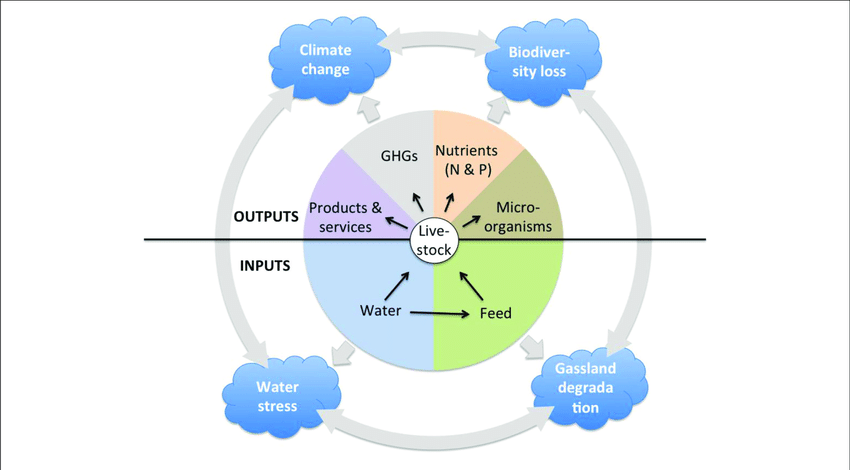

Consequences of Water Scarcity
1. Impact on Agriculture
Water scarcity significantly impacts agriculture in several ways:
- Crop Yield: Insufficient water availability for irrigation can reduce crop yields, affecting the quantity and quality of produce. This leads to potential food shortages and higher prices for agricultural products.
- Limited Crop Variety: Water scarcity often restricts the types of crops that can be grown. Certain crops might be more water-intensive, making them less viable in water-stressed regions.
- Increased Cost of Production: Farmers might resort to expensive measures like drilling deeper wells or using more advanced irrigation systems, which increase production costs. This, in turn, can raise the price of agricultural products for consumers.
- Shifts in Farming Practices: Farmers might need to alter their traditional farming practices, opting for drought-resistant or water-efficient crop varieties. They may also resort to more water-conserving irrigation methods.
- Risk of Land Degradation: In times of water scarcity, farmers might overexploit available water sources, leading to soil degradation and reduced fertility, which can harm the long-term productivity of the land.
- Livestock Impact: Water scarcity affects not only crop production but also the availability of water for livestock. Reduced water sources can impact the health and productivity of animals.
- Economic and Social Impact: Reduced agricultural output can affect the income and livelihoods of farming communities, potentially leading to food insecurity and economic hardship.

Addressing water scarcity in agriculture involves adopting efficient irrigation techniques, promoting water-saving practices, investing in water infrastructure, and exploring crop varieties that are more resistant to drought. Additionally, education and support for farmers regarding sustainable water management are crucial in mitigating the impact of water scarcity on agriculture.
2. Health Risks
Water scarcity can lead to a range of health risks:
- Waterborne Diseases:
 When clean water is scarce, people might resort to using
contaminated water sources, leading to an increased risk of waterborne diseases like cholera, typhoid,
and various gastrointestinal illnesses.
When clean water is scarce, people might resort to using
contaminated water sources, leading to an increased risk of waterborne diseases like cholera, typhoid,
and various gastrointestinal illnesses. - Poor Sanitation: Lack of adequate water affects sanitation and hygiene, increasing the risk of infections and diseases spread through unclean conditions.
- Malnutrition: Water scarcity affects agricultural productivity, potentially leading to food shortages and impacting nutrition, especially in vulnerable populations.
- Dehydration and Heat-Related Illnesses: In regions with extreme water scarcity, dehydration and heat-related illnesses become more prevalent, particularly among vulnerable groups such as the elderly and young children.
- Impact on Mental Health: Constantly worrying about access to clean water can lead to stress and anxiety, affecting mental well-being.
Addressing these health risks involves ensuring access to clean and safe water sources, promoting sanitation and hygiene practices, and educating communities about the importance of water conservation and proper water usage to mitigate the health impacts of water scarcity.
3. Ecosystem Disturbances
Water scarcity can significantly disturb ecosystems:
- Impact on Aquatic Life: Reduced water levels in rivers, lakes, and streams can threaten the survival of aquatic organisms. Flora and fauna dependent on these water sources may suffer due to habitat loss and altered ecosystems.
- Biodiversity Loss: Changes in water availability can lead to the decline of certain species that are specifically adapted to particular water conditions. This can disrupt the balance of ecosystems, potentially leading to a loss of biodiversity.
- Habitat Degradation: Ecosystems that rely on a consistent water supply may face degradation. Wetlands, for example, are particularly vulnerable to water scarcity, affecting the plants and animals dependent on these unique habitats.
- Altered Ecosystem Functions: Water scarcity can disrupt the natural processes within ecosystems. Nutrient cycling, food webs, and other vital ecological functions may be impacted, potentially affecting the overall health and stability of the ecosystem.
- Increased Competition for Resources: Reduced water availability might heighten competition among different species for the limited water sources, potentially leading to conflicts and changes in species distributions.
- Impact on Migratory Species: Migratory species relying on water sources as waypoints during their journeys may face challenges if these sources are scarce or altered, impacting their migration patterns and potentially their survival.
Addressing ecosystem disturbances caused by water scarcity involves sustainable water management practices, preserving and restoring natural water sources, and implementing measures to protect and restore affected habitats to maintain the balance and health of ecosystems.
4. Socioeconomic Challenges
Water scarcity poses significant socio-economic challenges:
- Impact on Livelihoods: Communities reliant on agriculture, fishing, or industries that require water face economic challenges when water is scarce. This can lead to reduced incomes and financial instability.
- Healthcare Costs: Water-related health issues, such as treating waterborne diseases, can strain healthcare systems, increasing costs and reducing productivity.
- Social Strain: Competition for limited water resources can create social tensions among communities or even within households. This can lead to conflicts and social unrest.
- Education Disruption: Children, particularly in rural areas, might need to assist in water collection, affecting their education. Lack of access to clean water at schools also impacts learning and attendance.
- Rural-Urban Migration: Water scarcity in rural areas can lead to migration to urban centers in search of better living conditions, placing stress on urban resources and infrastructure.
- Impact on Women: In many cultures, women are responsible for water collection. Scarcity increases their workload, limiting their time for education and economic activities.
Addressing socio-economic challenges posed by water scarcity involves implementing water management policies that prioritize both the availability of water for communities and sustainable economic activities. This includes investing in infrastructure, promoting efficient water use, and ensuring equitable access to clean water for all.
5. Industrial and Economic Impact
Water scarcity has significant effects on industries and the economy:
- Industrial Production Constraints:
- Manufacturing: Industries reliant on water for various processes can face limitations in production capacities, impacting the quantity and quality of goods produced.
- Energy Production: Power plants, especially those using water for cooling or hydropower generation, may experience reduced output during water scarcity, affecting energy supply.
- Increased Operational Costs:
- Investment in Technologies: Industries may need to invest in water-saving technologies or alternative water sources, leading to increased operational expenses.
- Efficiency Measures: Implementing measures to conserve water, such as optimizing production processes or recycling, can add to operational costs.
- Supply Chain Disruptions: Water scarcity can disrupt supply chains, affecting various industries reliant on each other, causing a ripple effect in production and availability of products.
- Impact on Energy Production: Reduced water availability directly affects energy production in facilities relying on water for hydropower or cooling, impacting overall energy output.
- Economic Slowdown: Reduced production, supply chain disruptions, and increased costs due to water scarcity can lead to decreased employment opportunities and hinder overall economic growth and stability.
To address these impacts, strategies promoting water efficiency in industries, better water resource management practices, and the use of alternative water sources are crucial. Collaboration between industries and governments is essential to mitigate the impact of water scarcity on the industrial and economic sectors.